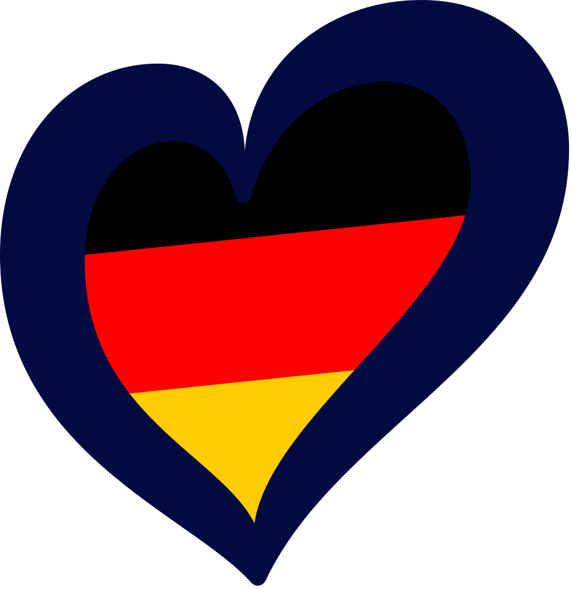
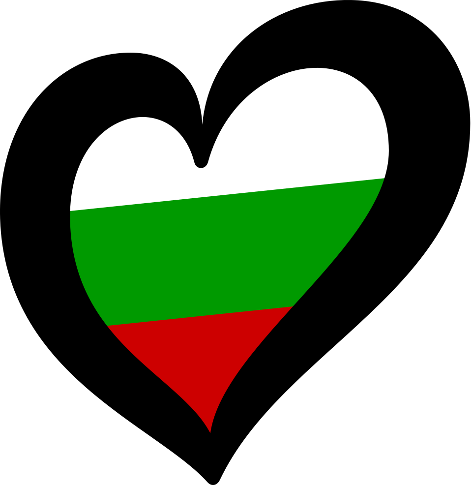
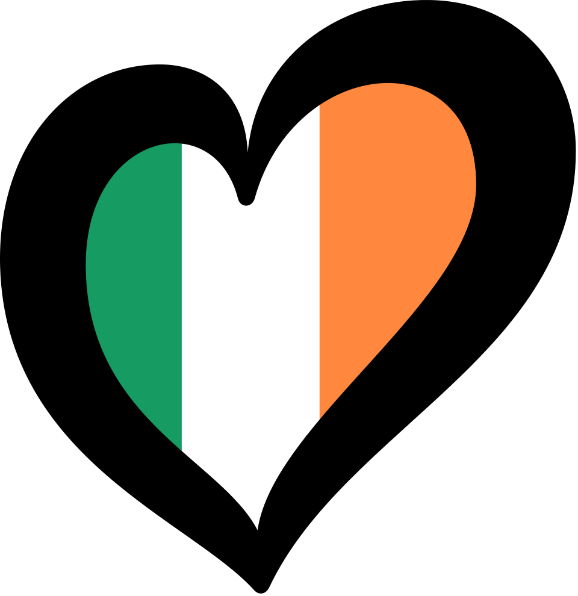
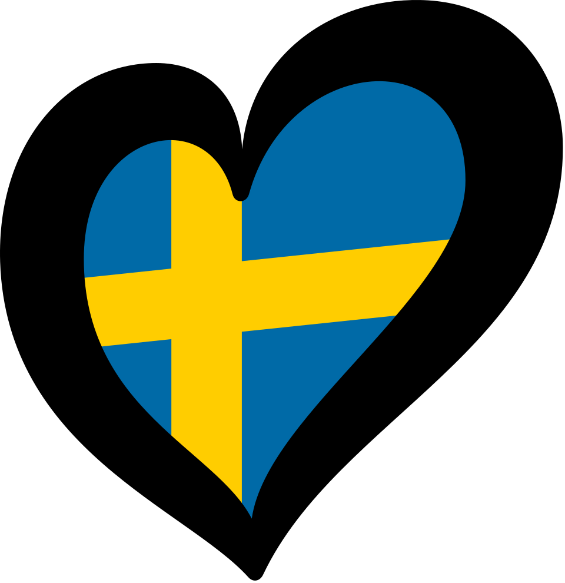

Before we can determine if Australia has a chance to win, we must first understand what Eurovision is.
Eurovision is an annual international song competition held among the member countries of the European Broadcasting Union (EBU). Each participating country submits an original song to be performed live on television, and then casts votes for the other countries' songs to determine the winner. The contest was establised in 1956, making it one of the longest-running television programs in the world. It is known for its diverse range of musical styles, extravagant performances, and its ability to bring together people from different cultures through music.
Among all the competing countries, Germany and France are the only two countries that have participated in every Eurovision Song Contest.
Across it's 70 years of history, Eurovision has seen a wide variety of musical genres. From pop and dance, to traditional and ballads, the contest has showcased a diverse range of musical styles. The most common genre in Eurovision is pop music, which has consistently been a popular choice among contestants. However, there have also been entries in other genres, such as rock and even opera. The diversity of genres in Eurovision reflects the evolving musical landscape and the creativity of the participating artists.
Now that we have a better understanding of what Eurovision is, we can start to explore what it takes to be a winner.

The very first winner of Eurovision was Switzerland in 1956, with the song "Refrain" performed by Lys Assia. After the end of the recent 2026 Eurovision song contest, we now officially have 70 winners, after Bulgaria claimed victory for the first time with their song "Bangaranga" performed by Dara.
The country with the most wins is tied between Ireland and Sweden with 7 wins each. Four countries have the second most wins of 5: France, Luxembourg, United Kingdom, and Netherlands. While Israel has the third most wins with 4. Despite having competed in every contest, Germany has only ever won twice. Australia has yet to taste victory. These statistics highlight the competitive nature of Eurovision and the challenges that Australia faces in its quest for victory.


Winning Eurovision is no easy feat. It requires a combination of factors, including a catchy song, a memorable performance, and a bit of luck. Having a great song and performance is crucial, however, it is not the only factor that determines success in Eurovision. In order to win, you must be a favourite with both the jury and public, as they each make up 50% of the total points.
Looking at the past decade winners (excluding 2020 as contest was cancelled), we can see that all previous winners recieved support from both the jury and public. Most notably, Portugal's win in 2017 with their song "Amar Pelos Dois" performed by Salvador Sobral stands out, as they recieved the highest combined total points in the past decade with 758.
Within in the past decade, more than half the songs were pop. Ballad was the second most common, while the rest of the genres were more rare with opera being the least common with only 6 songs.
Within in the past decade, unsurprisingly, pop has won the most number of times with 3 wins out of 10. However, surprisingly, opera has performed better than expected, with 2 wins when there were only 6 opera songs in the past decade. This shows that standing out and being different can lead to glory in Eurovision.
Sometimes in Eurovision there are variables you can't control, such as your position in the running order. The running order can have a significant impact on a song's chances of winning. Generally, songs that perform later in the show tend to have an advantage, as they are fresher in the minds of the public and jury when it comes time to vote. However, there have been winners that performed early in the running order, proving that while it can be a disadvantage, it is not an insurmountable one.
Looking at the past decade winners, we can see that the most common running order position for performances that go on to win has been position 12 with 3 wins. Usually, the grand final consists of 26 performances, meaning position 12 is right in the middle. This may be the new sweet spot for winning Eurovision.
Besides the genre of a song, the BPM is also important. The average BPM of a song normally is 120 BPM. Although, looking at the past decade winning songs, we can see that the highest occuring win rate was between 130 to 140 BPM with 3 wins. We can also see that there were more winners with songs being faster than 120 BPM, with 6 wins, compared to only 4 wins with songs being slower than 120 BPM. This suggests that lately the Eurovision audience has been favouring more upbeat and energetic songs.
Now that we have a better understanding of the factors that contribute to winning Eurovision, we can start to analyze Australia's past results to determine our chances of winning in the future.
Australia is the only Oceania country, and one in a few countries outside of Europe that has been specifically invited to compete in Eurovision. Ever since our debut in 2015, where we finished 5th, we have been a regular participant ever since. 11 years on, we have now competed on the Eurovision stage 11 times.
Looking at the past decade, out of the 10 times we competed, Australia has qualified for the grand final 7 times. This is a pretty decent record as some countries struggle to even qualify at all.
The best result we have achieved is placing second in 2016. However, after placing so high, we have never been able to replicate that success in the following years. The closest we have gotten was this years 2026 contest, where we placed 4th, which is still a very respectable result.
In the past decade Australia has consistently recieved decent points from the jury, with us even recieving the highest amount of jury points in 2016. However, the public points never reflected the same level of support, as every year for the last decade we have always recieved more jury points than public.
Australia has never recieved more than 200 public points. This is a concerning statistic, as only one out of the 10 past winners recieved less than 200 public points.
Australia's best result was in 2016, where we placed second with our song "Sound of Silence" performed by Dami Im. This was a very memorable performance, and it was a very close contest, as we only lost to Ukraine by 23 points.
Looking at the voting patterns of 2016, we can see that Australia recieved points from every country, with 2 countries Sweden and Albania giving us maximum jury and public points. This shows that we had broad support across the board, which is a great sign for our chances of winning in the future.
Now we that we understand what Eurovision is, how to win it, and how Australia has perfromed in the past. We can finally answer the main question of this visualisation, which is "Can Australia win Eurovision?".
Based on our analysis, we can see that Australia has a decent chance of winning Eurovision in the future. We have consistently qualified for the grand final, and we have recieved decent points from the jury. However, we need to work on improving our public support, as that is crucial for winning Eurovision. If we can find a way to connect with the public and get them to vote for us, then we have a good chance of finally claiming our first victory in Eurovision.This visualisation was created by Anthony Eav. Last updated on 31/05/2026.
Kaggle Data: https://www.kaggle.com/datasets/diamondsnake/eurovision-song-contest-data
. song_data
. Eurovision_2016_points
. eurovision_winners_all_years
. Eurovision_Country_Participation
These 4 data sources are from the author diamondsnake on Kaggle, they were accessed on the date 21/05/2026.
Eurovision World Data:
https://eurovisionworld.com/eurovision/2026
. Eurovision_Australia_Results
. Eurovision_past_10_winners
. Eurovision_past_decade_genres
. Eurovision_Winning_BPM
These 4 data sources are from the author of the Eurovision World website, they were accessed on the date 22/05/2026.